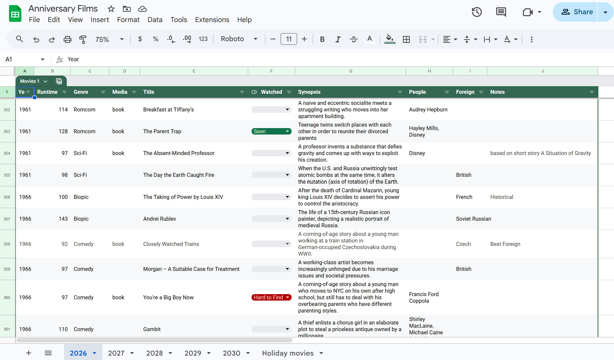

Projects
A collection of my data and web projects demonstrating my skills in analysis, visualization, and development.
Movie Website Project


This was my final project for the Harvard online CS50 course. I wrote it using VS Code and implemented it with HTML, CSS, and JavaScript. This project was a fun way for my wife and I to make large customized movie lists.
Anniversary Films Project

I re-made my Movie List website idea using Google Sheets. While requiring more labor to put together, it gave us the flexibility and ease-of-use my wife and I were looking for.
Snack Data Analysis

For this project, I analyzed snack consumption data (that I collected myself) to identify trends and preferences. I used Microsoft Excel to organize and visualize the data, creating charts and graphs to highlight key insights.